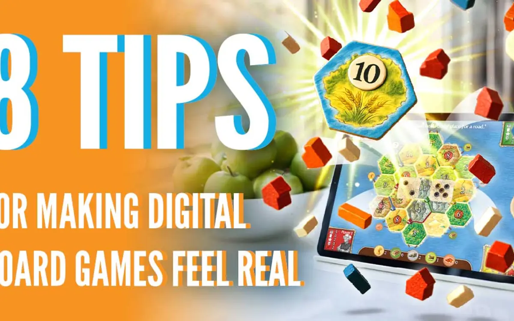
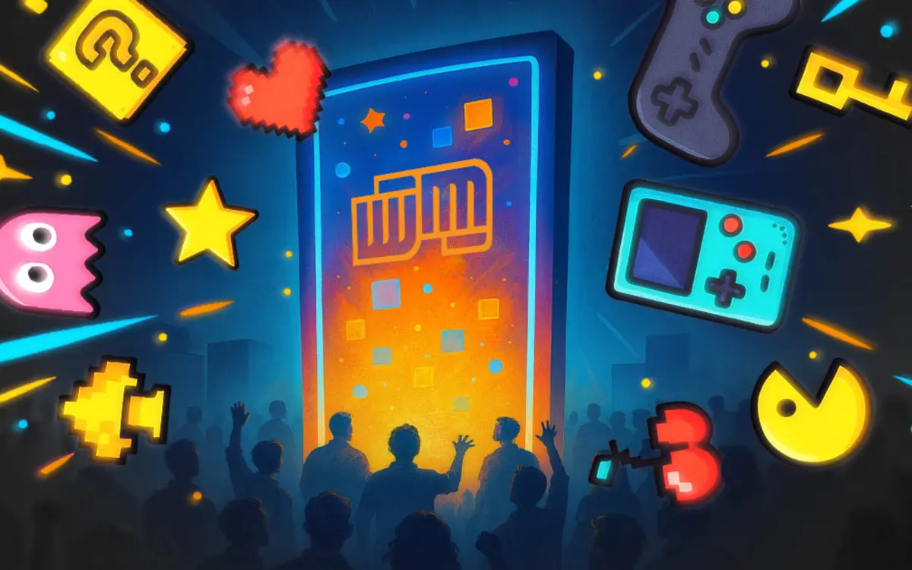

When the feature list explains too little
A service or product page needs to connect mechanisms, applications, constraints and the next buying question.
Technical and B2B writer
Turn product knowledge, documentation and expert ideas into articles, service pages, case studies and thought leadership that help a reader make a decision.
Start with a brief, documentation or expert input.
A writing demonstration
Technical content starts with the reader's task. Change the reader below to see how a short explanation changes. This exhibit brief is illustrative.
Example input
An interactive exhibit uses visitor input to change an on-screen scene.
One mechanism, three communication jobs.
Give visitors a scene they can influence, rather than a screen they only watch. The page should explain what visitors can do, how the exhibit responds and what a venue needs to plan before installation.
Writing task: connect the capability to the intended use.
Specify the input, the response it triggers and the conditions the installation must support. Confirm hardware, reset behavior and accessible alternatives with the implementation team before those details become public claims.
Writing task: separate a described mechanism from an unverified specification.
Open with what the visitor does. Explain the response, introduce an approved project example and show the design questions a venue should ask. Keep claims about engagement or learning tied to available evidence.
Writing task: give the piece a useful structure and an approval path.
Technical marketing and B2B editorial work
Technical content has two jobs: understand the work correctly and help the intended reader do something with that understanding. I work with product briefs, internal documentation, expert input, research, project histories, and editorial direction to produce clear articles, case studies, thought leadership, and web copy.
My Workinman Interactive portfolio spans game design, app engagement, branded experiences, digital exhibits, product updates, and trade-show technology. Those assignments required coordination with editors, executives, artists, developers, strategists, and stakeholders—not simply rewriting a feature list.
A service or product page needs to connect mechanisms, applications, constraints and the next buying question.
Interviews and documentation can become articles or thought leadership with a clear point of view and a defined expert review.
A case study can explain the problem, important decisions and documented result, with your team's contribution made explicit.
Choose the job the content must do
Product and service pages, technical explainers and landing-page copy. Give a buyer a usable explanation of what the work involves, who it suits and what information the next discussion needs.
Case studies and project stories. Establish the challenge, decisions, participants and result you can substantiate. Put the writing through the people responsible for its technical and client details.
Research-led B2B articles, interviews, thought leadership and substantive editing. Turn subject expertise into a structured argument that fits the publication, brand voice and reader.
Working with subject-matter experts
We establish the reader, business question, intended asset and available material. I identify what can be drafted now and which questions need expert input.
I work from documentation, interviews or written responses, using specific questions about mechanisms, applications and constraints.
The explanation follows the reader's decision. Technical terms appear where they are useful, with definitions or context where they are needed.
Experts check accuracy and approved claims; the editorial owner checks voice and fit. We agree reviewers, deadlines and revision scope before starting.
The current offer focuses on technical marketing and editorial content. Requirements for manuals, API references or regulated documentation need a separate fit discussion.
Client example · Workinman Interactive
In 5 Tips for Gamifying Boring Apps, I developed Workinman's editorial direction and gamification expertise into a structured article. It explains progression, habit loops, achievements, competition and surprise through concrete product examples.
The studio workflow brought together editorial and multidisciplinary input. My writing contribution was to organize that knowledge around what a product owner needed to understand, including where a mechanic can fail.
Review the assignment and my contributionThe portfolio includes published client articles on branded games, digital exhibits, trade-show experiences and product updates. Each project identifies the source, context and writing contribution.
Read the full gamification articleSelected work
These Workinman assignments show how a studio's design knowledge and product information become readable business content.

An eight-part guide to preserving rhythm, agency, atmosphere, solo play, and long-term interest when board games move to screens.
A practical guide to brand guidelines, IP constraints, creative approvals, and risk in playable brand experiences.

A case-led explanation of how participatory demos, social momentum, analytics, and iteration can turn a booth into an experience.
Before we scope the work
Yes. I can prepare focused questions, work from interviews or written responses, and return technical points for review without making the expert rewrite the article.
The strongest fit is a complex product, process, research area, or service that requires source review and careful translation. Current portfolio evidence includes interactive media, gaming, exhibits, environmental research, and scientific communication.
Yes. I have worked from outlines, defined tone and scope, stakeholder feedback, and multi-stage review within a studio team.
The offer here focuses on technical marketing and editorial content. For manuals, API references or regulated documentation, share the requirements so we can assess fit before agreeing a scope.
Yes. Share the intended audience, business goal and available material. We can scope the questions and expert input needed before drafting. Review responsibilities and revisions are agreed in the proposal.
A defined first project
Share the product or service, the intended reader, the asset you need and the documentation or experts available. We will define the first assignment and its review path.